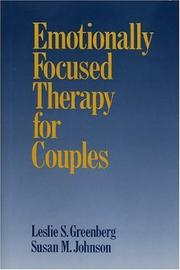

Emotionally Focused Therapy for Couples
Book·Leslie S. Greenberg, Susan M. Johnson, 1988·伴侣情绪聚焦治疗

The two founders explain the theory and practice of emotionally focused couple therapy, combining attachment with emotional processes.
- Author
- Leslie S. Greenberg, Susan M. Johnson
- Year
- 1988
- Difficulty
- Advanced
- Kind
- Practice
- Schools
- Emotion-Focused Therapy
- Core theories
- Emotionally Focused Couple Therapy
Editions
- English edition Emotionally Focused Therapy for Couples Leslie S. Greenberg, Susan M. Johnson · Guilford Press, first edition · 1988 Open Library ↗